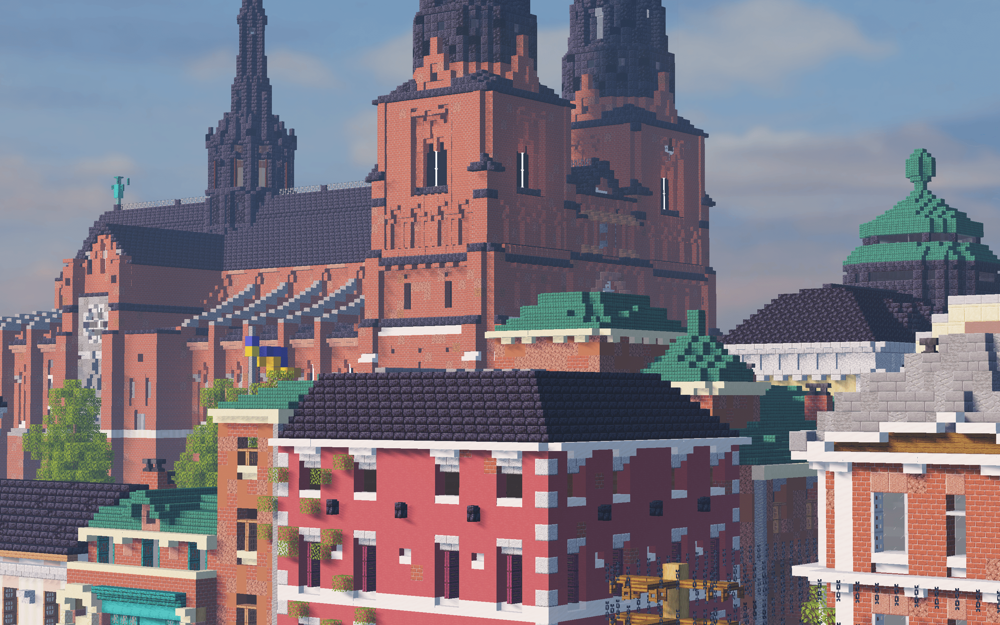

Harlon City Server


New to Harlon? Learn more about Harlon here and what it can offer you.

Find points of interest, public transport, landmarks and more on the server and track your location in real time.

View information about our staff, history and more.
Quick Links
If you have been banned from Harlon but believe you should be allowed back onto the server, fill out an appeal application here.
Want to join our building team to help Harlon grow? Find more details and apply here!
Interested in joining the staff team and making a lasting contribution to Harlon? See what joining the staff team is like and apply here.
Harlon's wiki provides additional, extensive information on the server, and the best part is that you can contribute too!
Vote for us on server voting pages to help even more players discover what Harlon has to offer. Even better, as a way of saying thanks, we'll give you £40 in-game each time you vote!
Chip in to help keep Harlon running through our store! We appreciate any and all contributions that help us recouperate these costs.